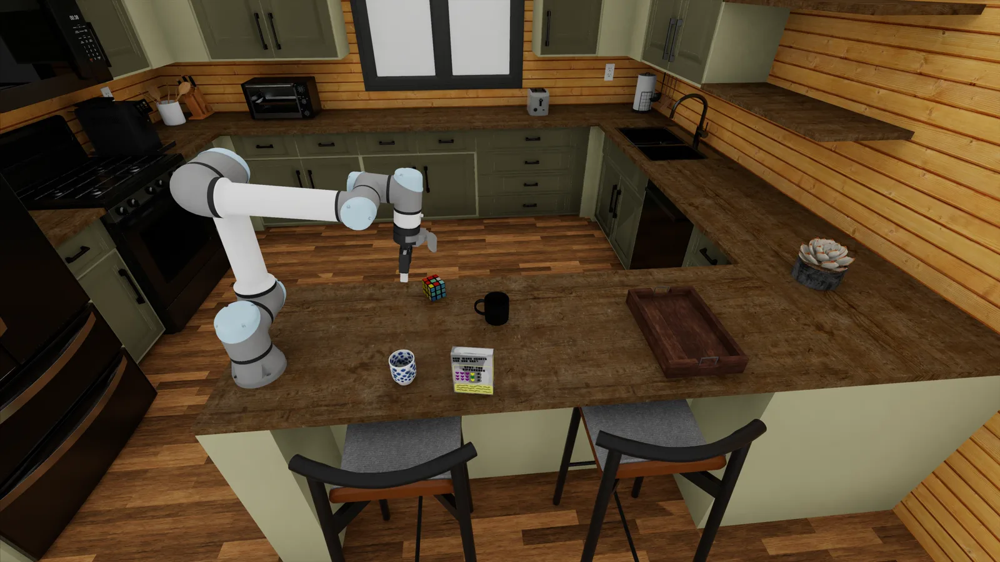
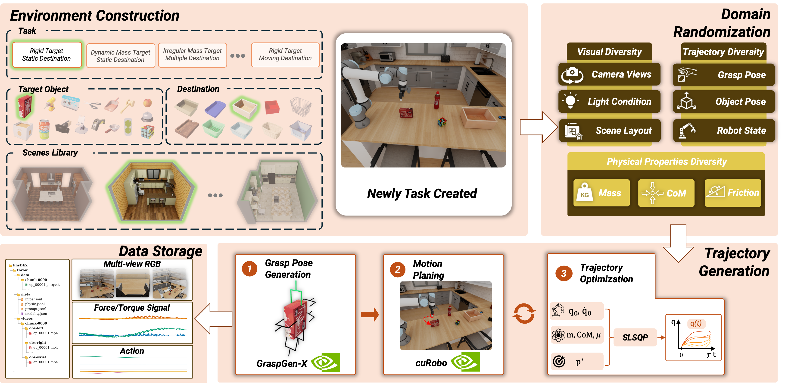

Success rate below 3% on the full PhyDEX benchmark.
Overall average across all nine throwing tasks at full diversity (α = 1).
Success rate (%) · higher is better

1AICV Lab, University of Arkansas, USA 2VinUniversity, Vietnam 3Center for AI Research, VinUniversity, Vietnam 4University of Stuttgart, Germany 5DFKI, Germany 6Max Planck Research School for Intelligent Systems, Germany 7University of Liverpool, UK
*Equal contribution
Vision-Language-Action (VLA) models have advanced rapidly, yet existing benchmarks mainly evaluate gripper–object contact and largely ignore how objects interact with the environment through gravity, friction, inertia, and mass distribution. We study this gap through the lens of dynamic extrinsic dexterity and introduce PhyDEX, a throwing benchmark in which a robot must infer an object’s mass, center of mass, and friction to send it to a destination beyond its kinematic workspace. Generated by a fully automatic pipeline, PhyDEX covers uniform, irregular, and dynamic-mass objects with static, multiple, and moving destinations. Three representative VLAs (GR00T N1.7, DynamicVLA, and ForceVLA) all succeed less than 3% of the time, held back by limited robustness before the throw and by physical blindness: providing ground-truth physical properties roughly doubles success. Humanoid and real-world experiments show the same failure patterns.

From a task template, a target object, destination, and kitchen scene are retrieved from the asset library to create a new task.
Each task is diversified visually (camera views, lighting, layout), in its trajectory (grasp pose, object pose, robot state), and physically (mass, Center-of-Mass, friction).
GraspGen-X proposes grasps, cuRobo plans a collision-free approach, and an SLSQP optimizer computes the throw, refining it in closed loop until it lands.
Successful episodes are saved in LeRobot format with multi-view RGB, force/torque signals, and actions.
Nine tasks, from grasp to landing. Explore how object properties and destination motion change each throw.
Success rates from our benchmark and real-world experiments. Explore how performance changes as scene diversity decreases.
Overall average across all nine throwing tasks at full diversity (α = 1).
Success rate (%) · higher is better
Average across the three object types with a static single destination. Each line follows one policy across all three diversity levels.
Success rate (%) · α = 0 → 0.5 → 1
Evaluated on one task only: uniform-mass objects with a single stationary destination. Compare policies with and without ground-truth mass, Center-of-Mass, and friction.
Success rate (%) · higher is better
Success rates for each real-world object condition, with 50 rollouts per policy and condition.
Success rate (%) · higher is better
Reported values from the paper’s benchmark, diversity, and real-world results tables, and the ground-truth physics figure. Each policy is evaluated over 50 rollouts per task or object condition. Axis ranges differ across panels to keep small success rates readable.
@misc{phydex,
title = {PhyDEX: A Benchmark for Physical Reasoning in
Vision-Language-Action Models via Dynamic Extrinsic Dexterity},
author = {Hao Vo and Taisei Hanyu and Yuki Ikebe and
Pham Tri Quang and Sreevenkata Anjani Tishita Godavarthi and
Nghi D. Q. Bui and Daniel Sonntag and Chase Rainwater and
Duy Minh Ho Nguyen and Anh Nguyen and Ngan Le},
url = {https://uark-aicv.github.io/PhyDEX/}
}